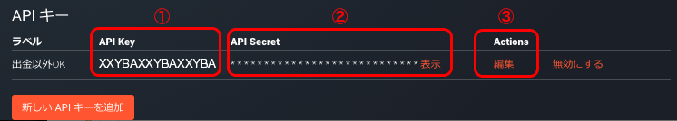

BitCoin 自動取引ボットの作り方
N予備校プログラミング入門コースで扱っている Node.js を使って ビットコインの自動取引ボットを作成してみましょう。
BitFlyer が提供している
bitFlyer Lightning API
という API を使用すれば Node.js の知識を使って自動取引ボットを作ることができます。
この bitFlyer Lightning API は、
説明も日本語でかつ、サンプルコードも日本語なのでこれを見ながらプログラムを書いてボットを作っていきましょう。
1. アカウントを作ろう
以下の URL から BitFlyer のアカウントを作成します。
アカウント作成ページ
アカウントが作成できたら、ログインをして
アカウントのホーム画面 にて
現在の資産状況や、様々な手続きのページに飛ぶことができるようになっています。
例えば
bitFlyer Lightning
では、Web から現在取引取引されている様子を見ることができますし、取引を行うこともできます。
また 入出金 ページでは、
銀行振込やインターネットバンキングなど様々な方法でアカウントに入出金することができます。
2. 入金しよう
入出金 ページ より入金します。
反映には少し時間がかかることがります、なお、銀行振込で入金する場合は平日のみ処理が行われますので、
金曜日に入金すると次週の月曜日まで反映されませんので、注意しましょう。
3. アプリケーション登録
開発者ページ にアクセスします。
ログインができていると、 API Key と API Secret が取得できると思います。
これをプログラムで設定してつかっていきます。

また、Actions の編集（上図③） をクリックして、できる API キーの権限を設定もできます。
4. API リファレンスを見てみる。
API Documentation では、
HTTP API と Realtime API の 2 種類の API の機能が 日本語によって記載されています。
さらに、サンプルコードが Node.js で書かれています。
これを見ながら、プログラムを実装していきましょう。
5. Node.js のインストール
こたつでプログラミングを参照
6. プログラムを書いてみる。
6-1. 準備
mkdir ~/workspace
mkdir ~/workspace/bitTrader
cd ~/workspace/bitTrader
npm init
touch config.js
echo "config.js\nnode_modules/" > .gitignore
VSCode などのエディタでプロジェクトフォルダーを開いたら、
config.js が下記のようになっていることを確認」しましょう。
config.js
node_modules/
6-2. config.js の作成
const API_keys = {
API_Key: 'XXXXXXXXXXXXXXXXXXXXXXXX',
API_Secret: '1234567890YYYYYYYYYYYYYYYYYYYY'
};
module.exports = {
API_keys: API_keys
}
API_Key と API_Secret の箇所は、
先ほど自分で取得したものに設定してください。
7. Realtime API を使って最終取引額（ltp）を取得してみよう
Realtime API は、PubNub を利用してリアルタイムの更新情報を配信れています。
以下の Subscribe Key を使用して受信できます。
PubNub Subscribe Key: sub-c-52a9ab50-291b-11e5-baaa-0619f8945a4f
PubNub のドキュメントもあります。
npm install pubnub --save
Realtime API を参考に
index.js を以下のように実装してみましょう。
const PubNub = require('pubnub');
const pubnub = new PubNub({
subscribeKey: 'sub-c-52a9ab50-291b-11e5-baaa-0619f8945a4f'
});
let ltp;
let timestamp;
const listener =
{
message: function (message) {
timestamp = message.message.timestamp;
ltp = message.message.ltp;
console.log(`最終取引残高(ltp)は ${ltp} 円です。`);
}
};
pubnub.addListener(listener);
pubnub.subscribe({
channels: ['lightning_ticker_BTC_JPY']
});
node index.js で実行すると、すごい速さでログが更新されるのが確認できるかと思います。
Ctrl + C で終了しましょう。
8. HTTP Private API を使って買い注文や売り注文を出してみよう
HTTP Private API
npm install request --save
npm install crypto --save
npm install moment-timezone --save
以下を追加
先頭
var request = require('request');
var crypto = require('crypto');
var moment = require('moment-timezone');
const config = require('../config.js');
const API_Key = config.API_keys.API_Key;
const API_Secret = config.API_keys.API_Secret;
本文
function buyOrder(price, BTCSize) {
return new Promise(function(resolve, reject){
var timestamp = Date.now().toString();
var method = 'POST';
var path = '/v1/me/sendchildorder';
var body = JSON.stringify({
"product_code": "BTC_JPY",
"child_order_type": "LIMIT",
"side": "BUY",
"price": price,
"size": BTCSize,
"minute_to_expire": 1440,
"time_in_force": "GTC"
});
var text = timestamp + method + path + body;
var sign = crypto.createHmac('sha256', API_Secret).update(text).digest('hex');
var options = {
url: 'https://api.bitflyer.jp' + path,
method: method,
body: body,
headers: {
'ACCESS-KEY': API_Key,
'ACCESS-TIMESTAMP': timestamp,
'ACCESS-SIGN': sign,
'Content-Type': 'application/json'
}
};
request(options, function (err, response, payload) {
if (err){
reject(err);
return;
}
try {
payload = JSON.parse(payload);
if (payload.error_message) {
reject(payload.error_message);
return;
}
resolve(payload);
} catch (err) {
reject(err);
}
});
});
}
setTimeout(function() {
const buyPrice = Math.floor(ltp * 0.9);
buyOrder(buyPrice, 0.001).then((payload) => {
console.log(`注文に成功しました。注文ID ${payload.child_order_acceptance_id}`);
}).catch((err) => {
console.log(`注文に失敗しました。`);
console.log(err);
});
}, 1000 * 3);